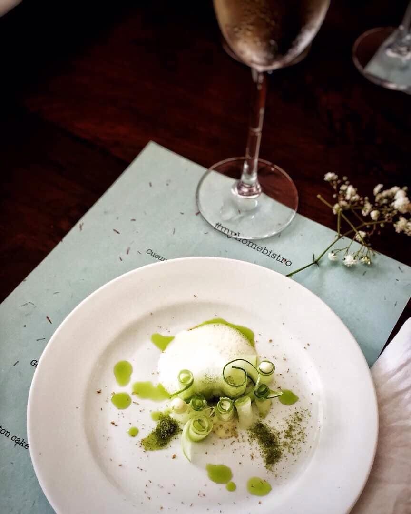
AMUSE BOUCHECucumber tartare with four avatars of lemon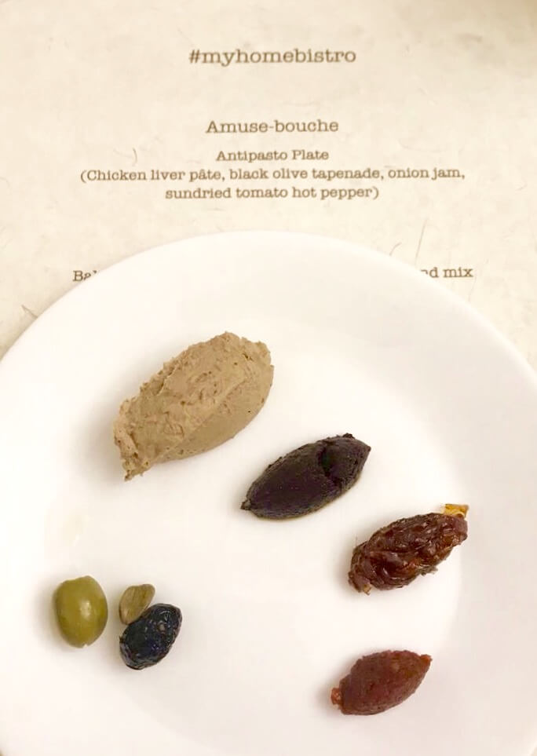
AMUSE BOUCHEAntipasto plate (Chicken liver pâté, black olive tapenade, onion jam & sun dried tomato with hot pepper)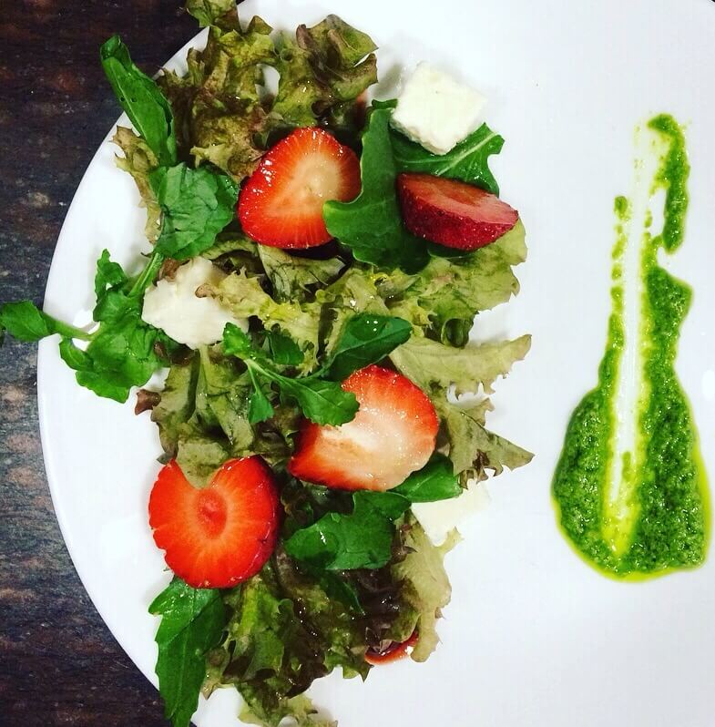
SALADBalsamic vinegar strawberry with mixed leaves, feta and roquette pesto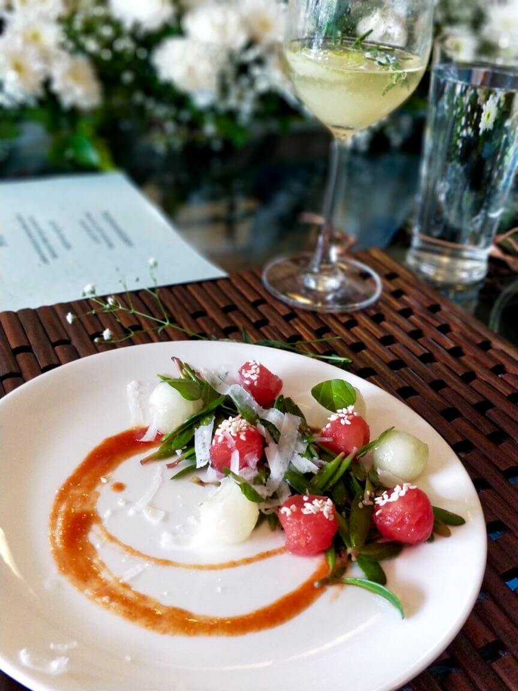
SALADMixed melons with moras leaves and watermelon jus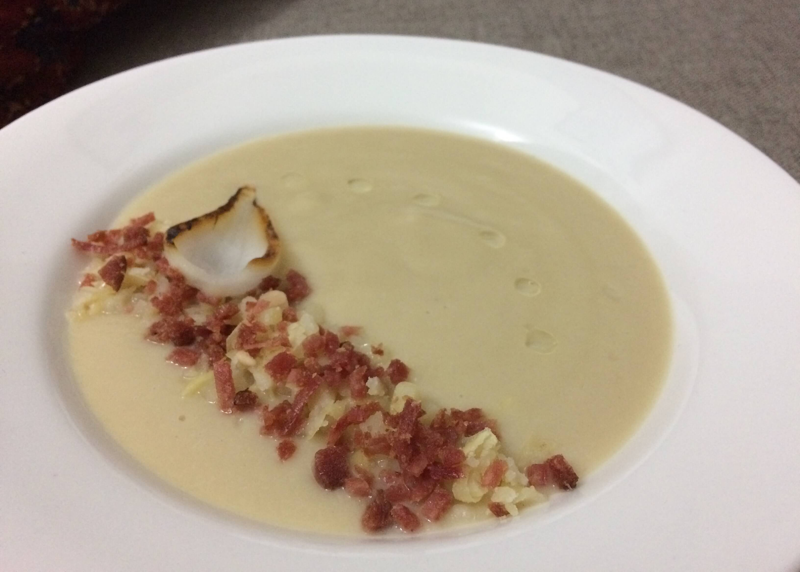
SOUPOyster mushroom and butter beans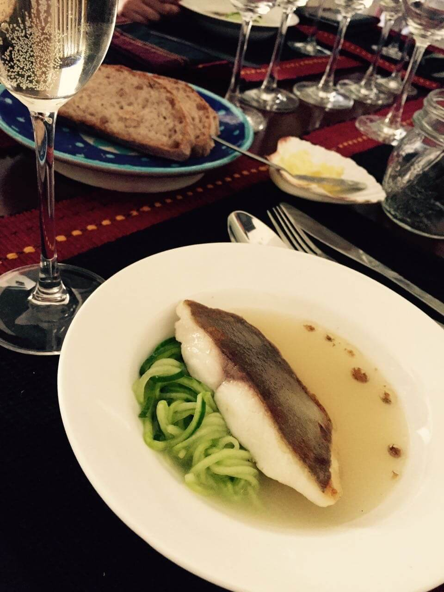
POISSON FISHPomfret with cucumber and tonka beans infused fumet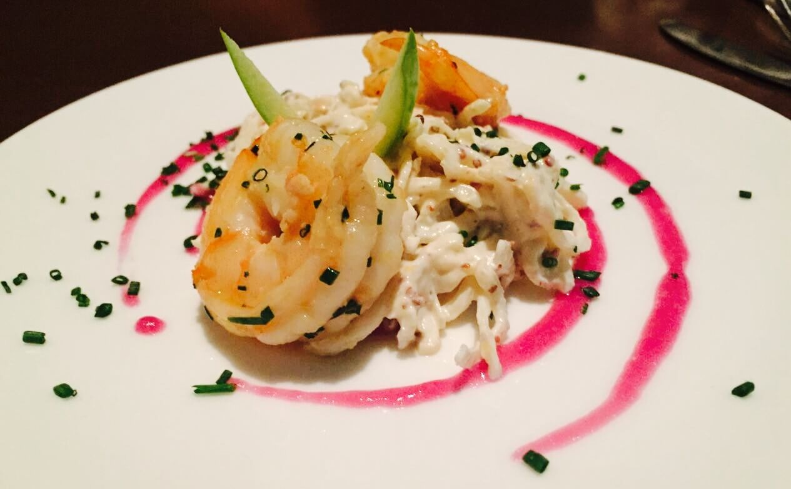
POISSON FISHShrimps with red cabbage gel and celery boule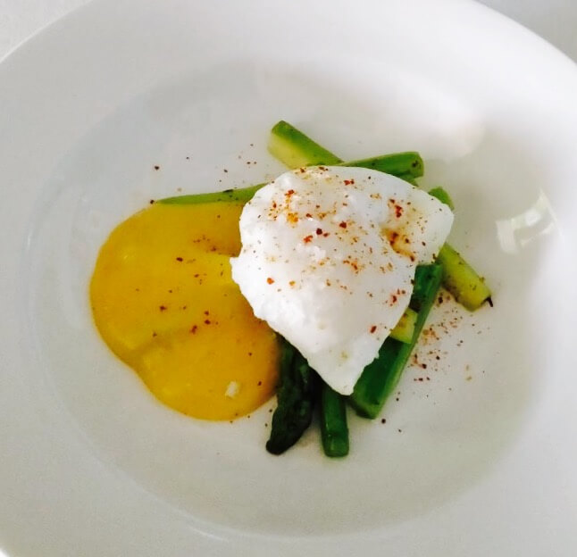
OEUF EGGPoached organic egg with asparagus and hollandaise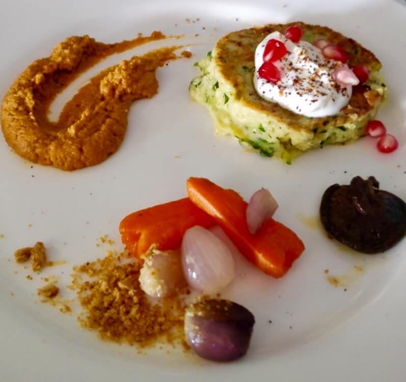
PLAT VEGETARIANZucchini fritters with romesco and parmesan crumble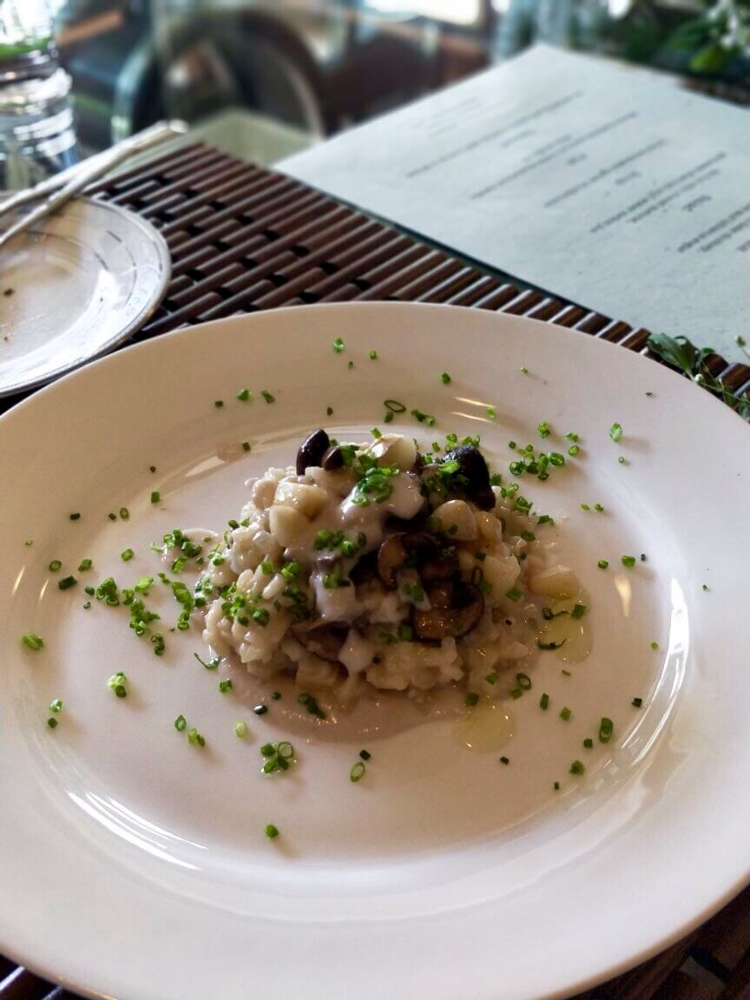
PLAT VEGETARIANRisotto with portobello mushroom, waterchestnut purée and truffle oil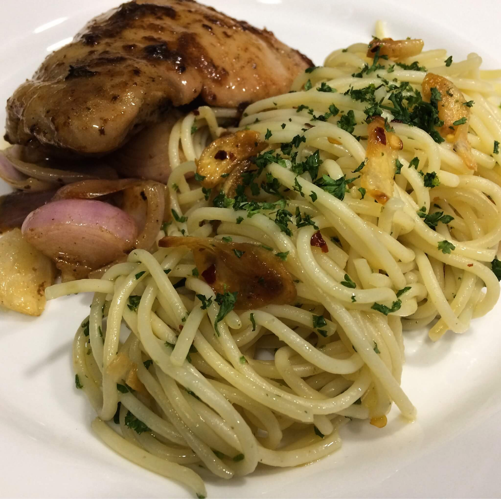
PLAT NON VEGETARIANTurkish spice rubbed chicken with spaghetti aglio olio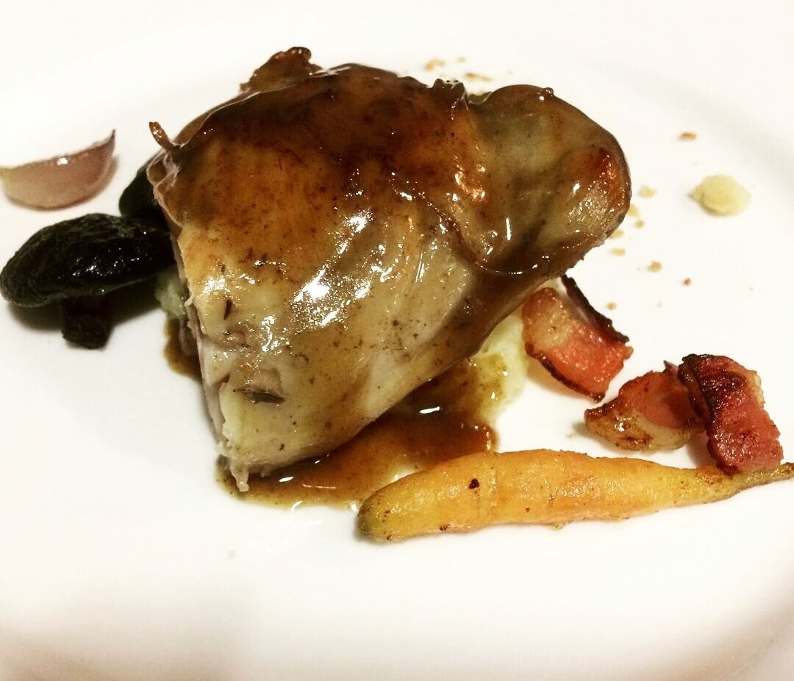
PLAT NON VEGETARIANCoq au vin with mashed potato, bacon crisps and parmesan crumble DESSERTCotton cake with poached peaches and cream anglaise
DESSERTCotton cake with poached peaches and cream anglaise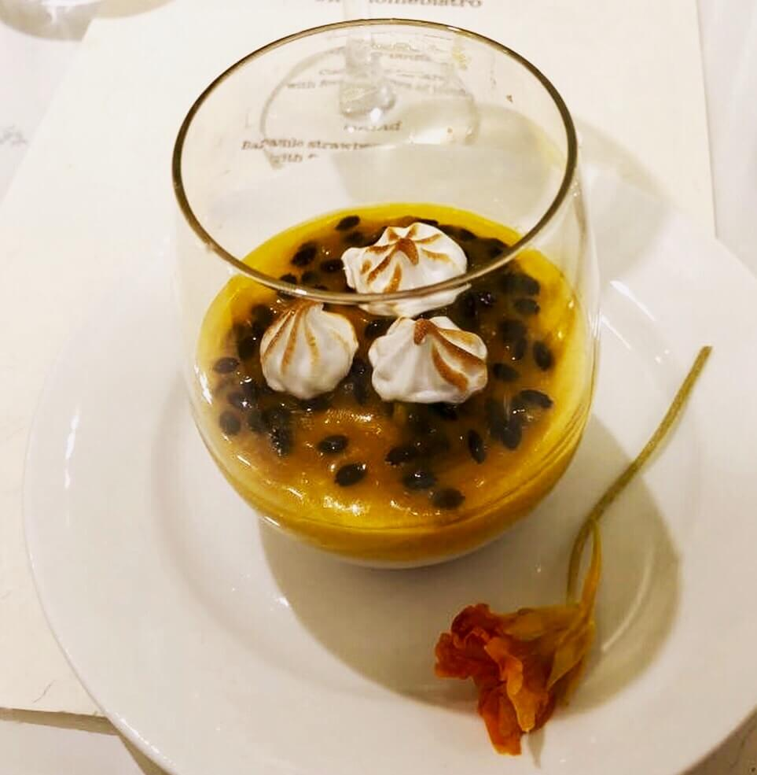
DESSERTWhite chocolate and coconut panacotta with mango mousse, passion fruit sauce